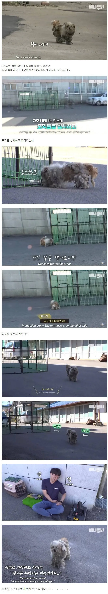
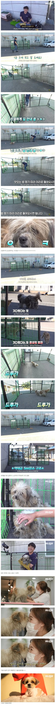

157 · 4 · 17 시간 전 · 원문


수집 당시 댓글 9개
↳ 답글 · 놀고싶다 · 23 시간 전
냄새야 맡을수 있다 치지
근데 입에 넣고 오물오물 촵챱챱 거리고 먹는거는 솔직히 으...
↳ 답글 · 진짜태초 · 23 시간 전
식분증이라고 고칠수도있긴하다네
↳ 답글 · 놀고싶다 · 22 시간 전
교육하면 고친다고는 하네
여튼 시츄가 유독 그게 심하다고 들어서
맨주먹정신 · 1 일 전
찹추
에궁님 · 1 일 전
저런 순한 개가 왜 동내 할머니들은 피했지? ㅋㅋㅋㅋ
양태진짜나빠요 · 1 일 전
복실이 라고 하지 왜 누렁이라고 했대..
↳ 답글 · 검은흰둥이 · 1 일 전
누렇긴 해
나쁜말안함 · 1 일 전
누르렁~
pentatonic · 1 일 전
이거 볼때마다 냥이들도 밥냄새 맡고온게 웃김 ㅋㅋㅋ
냄새야 맡을수 있다 치지
근데 입에 넣고 오물오물 촵챱챱 거리고 먹는거는 솔직히 으...